Open Logistics Map - OLMap
Collection process for map data
The OLMap data collection tool has been developed to help improve OSM data on features of interest to logistics companies, especially entrances, gates and other barriers. It is designed for data collection "in the field" using a smartphone, and subsequent data processing using a computer and the iD OSM editor. It may also be used as a more general map commenting & data collection tool. It enables:
- Collecting points of interest on the map, in the form of images and/or textual notes.
- Linking the collected notes to nearby OSM features (entrances, barriers, addresses, named features such as companies & streets)
- Categorizing the notes by the type of information documented (e.g. entrance, barrier, problem)
- Entering the most relevant OSM tags related to the documented features (e.g. wheelchair access, opening hours, number of steps)
- Serving the notes as a GeoJSON dataset to support OSM editing by layering on top of the iD edit view
- Exporting the entered tags as a text blob directly copyable to the iD tags input field.
User roles
There are currently two roles of significance to data collection in OLMap - user and reviewer. Users can:
- Create new map notes, categorize them, relate to OSM features, and add OSM tags for them.
- Comment on, and up/downvote existing notes, but not edit or delete them.
In addition to that, reviewers can:
- Edit the categories, OSM feature links and OSM tags of existing notes.
- Export the entered tags as a text blob directly copyable to the iD tags input field.
- Mark notes as accepted or rejected; rejecting notes will make them invisible to all users.
Currently, the process to become a reviewer is to contact johan.lindqvist@forumvirium.fi.
Adding an image note to the map
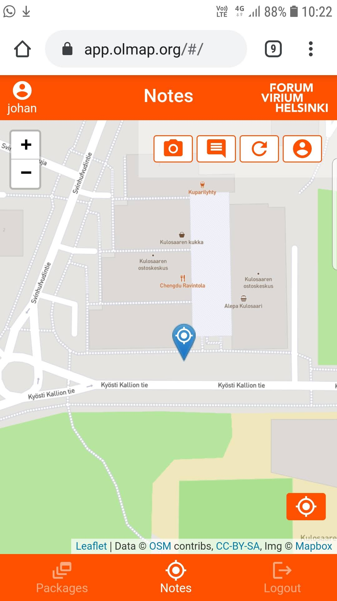The notes view (which is the default view for most users) shows the user's position on the map, as detected by the device's location sensors. The view offers four action buttons on the top right; in order:
- Take a photo
- Make a textual map note
- Reload notes on map
- Limit notes shown to my own notes

Once you are happy with the photo, the system will request the exact position of the pictured feature. Use surrounding features on the map background to pinpoint the location:
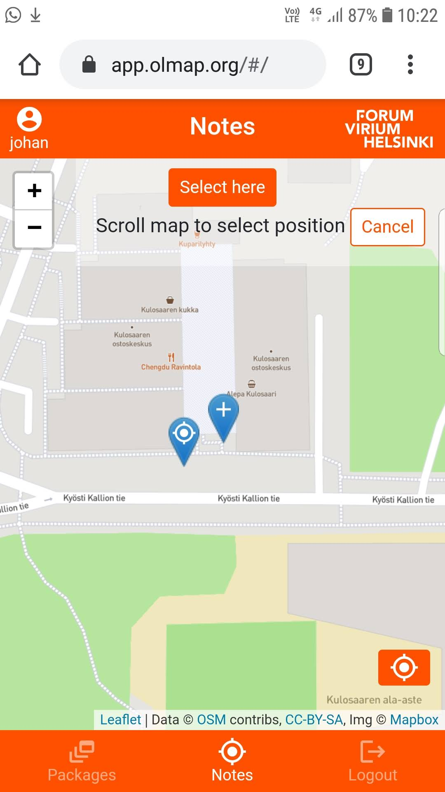When you have selected the location, OLMap will search for nearby OSM features of interest and allow you to link the note to one or more existing features. Point features have a location button showing a popup of the location of the feature relative to your new note. Select any features directly related to the subject of the note:

Now, OLMap will allow you to enter a free text description for the note; you can also tag it to mark the intention of the note. Most tags are associated with a particular type of OSM feature; selecting the tag allows you to then enter more specific information on that feature. This may in some cases be more convenient to do later with a computer, given that the relevant information is visible in the picture or the free text description:
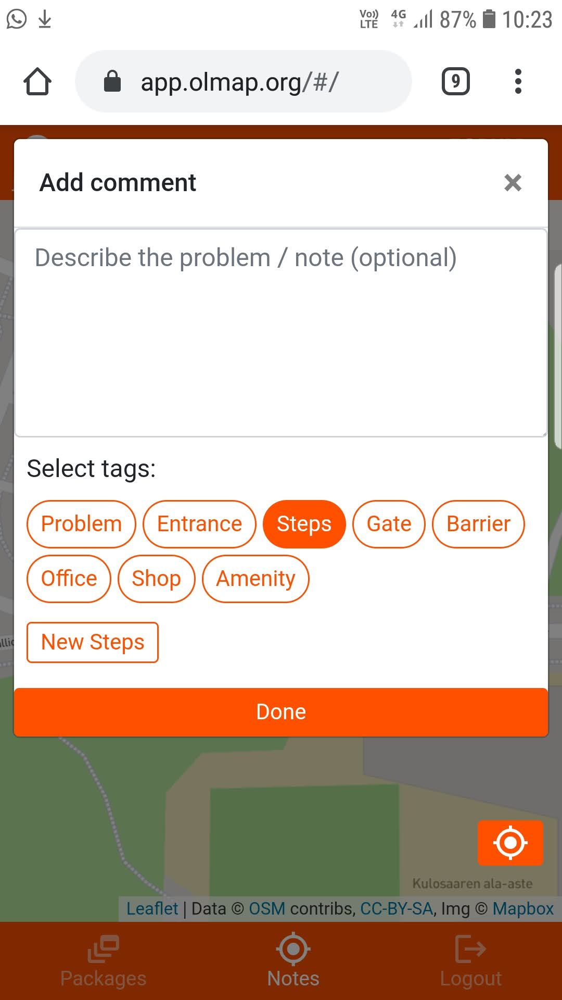When all the relevant information has been entered in the field, tap the Done button in the very bottom of the active window. A verification notice on successful save should be shown:

Now the new note is visible as a circle on the map to you and all other users of the system. Reviewers will see the new note as orange (as opposed to green) to highlight that it has not yet been reviewed and added to OSM:
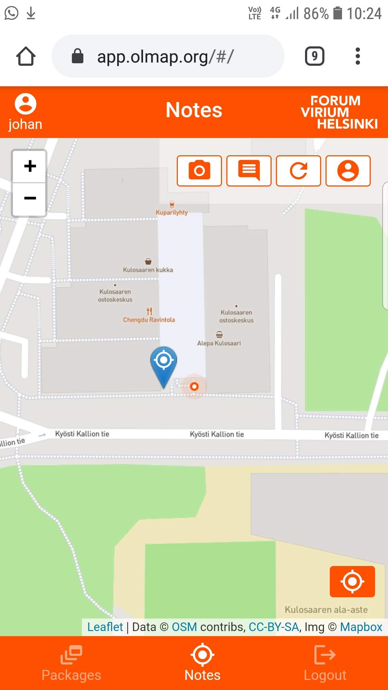Tapping on the note on the map will open a popup showing the information as entered. Pictured here is the view as shown to a reviewer user; some features are only shown to reviewers:
- The OSM / Accept / Reject actions for OSM editing & note reviewing
- The opportunity to change the tags after note creation.
Documenting stairs
Choosing the steps tag allows you to enter basic information on the stairs that would be relevant for someone planning to use them while delivering a package:
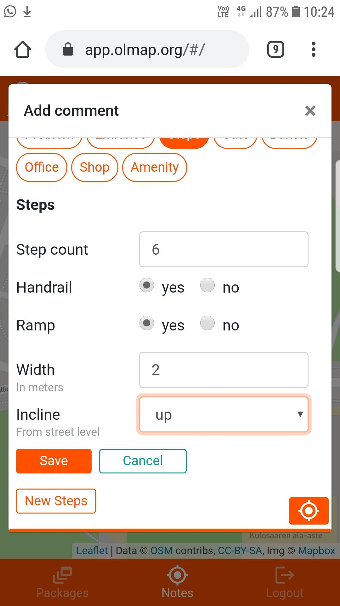Once the note has been saved, reviewers are provided with the option to copy the given OSM tags as one text field for transfer to OSM via the iD editor:

Documenting entrances

When documenting an entrance, the process starts as described in Adding an image note to the map above. After tagging the note as an entrance, the New Entrance button appears; tapping it gives you the opportunity to add entrance-specific fields:

When opening a saved image note, tapping on the image zooms in to the tapped point; this can be useful especially when documenting texts and other essential details around entrances:
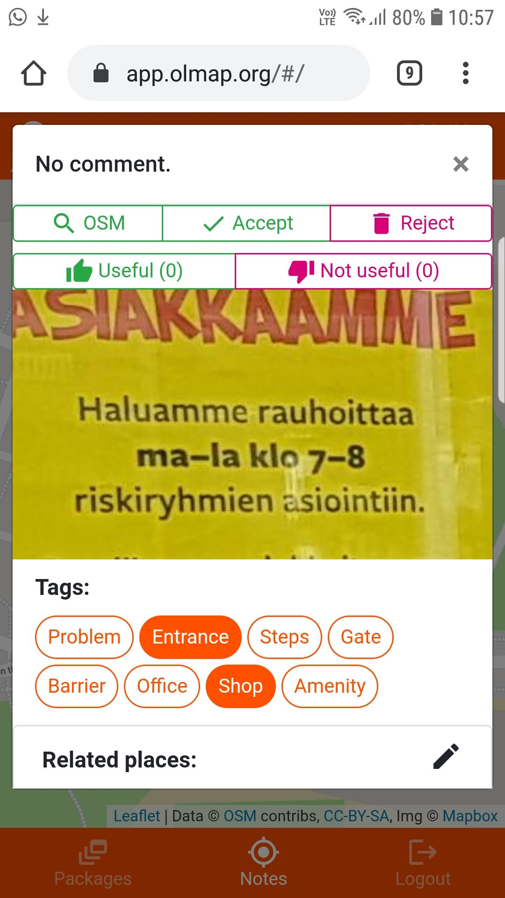Documenting companies and services
The shop, amenity and office tags give you the opportunity to input information relevant to companies reachable through the documented entrances:

Editing OSM with iD and OLMap
After collecting the data in the field, it can be refined and integrated into OSM. It is recommendded to use a computer with a large screen for this; the process is generally most efficient if you have space to open OLMap and iD side by side.
When opening a newly saved note on the map, reviewers are provided with an OSM button in the top left corner; clicking the button will open the iD editor in a new browser window, zoomed in to the location of the open OLMap note:

After opening iD, it is recommended to move & resize the OLMap & iD windows to a side-by-side scheme. Then, open the Data layers -> Custom map data option in the iD side menu and enter the url https://api.olmap.org/rest/osm_image_notes.geojson :
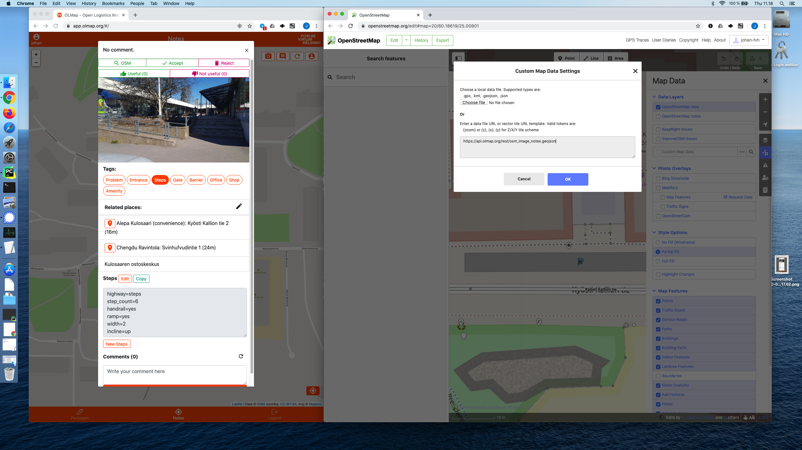Now, OLMap image notes should show as pink circles on the map in the iD editor:

To get the documented tags into OSM, a reviewer can copy all the tags for one feature from OLMap in the format expected by the iD tags input field:
 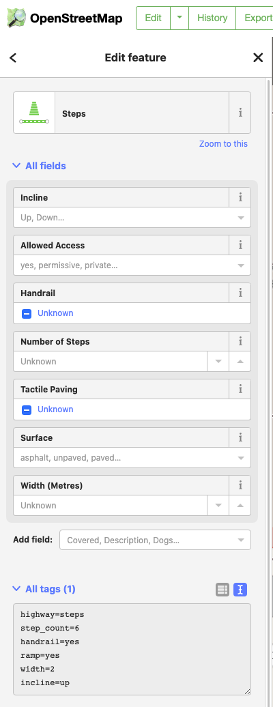
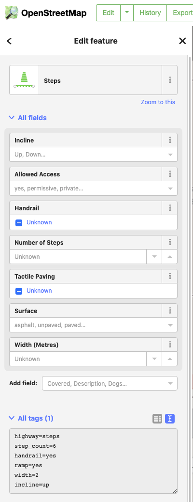
When adding new point features with this process, it is most efficient to just choose Point as the type; the more specific type will be automatically recognized from the fields copied from OLMap:
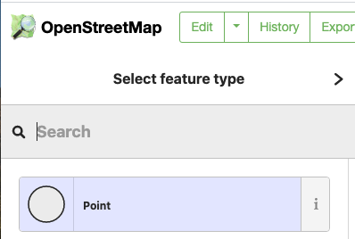

Linking newly created features & entrances
Once a changeset with new features created from OLMap notes has been committed to OSM, one more step is recommended; linking the newly created OSM features back to the OLMap notes, and explicitly linking any newly created companies and entrances with each other. The purpose of this is to allow e.g. OLMap-aware OSM-based navigation apps to display relavant OLMap notes for OSM-based routes, and to recommend the correct entrance when routing to a company.
Linking new features to notes is achieved with the Related places section in the UI, in the same way as any original related features were selected when creating the note. When listing entrances in the related places list, an additional link button is shown; clicking the button opens a separate list of possible companies to link to the entrance. Select any companies reachable using the selected entrance:
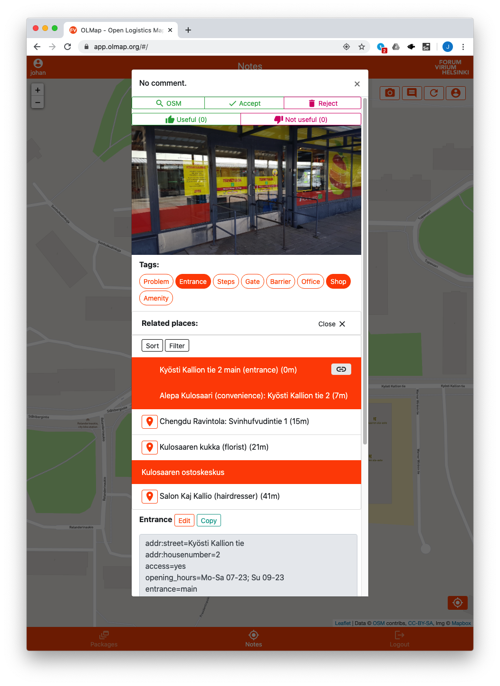 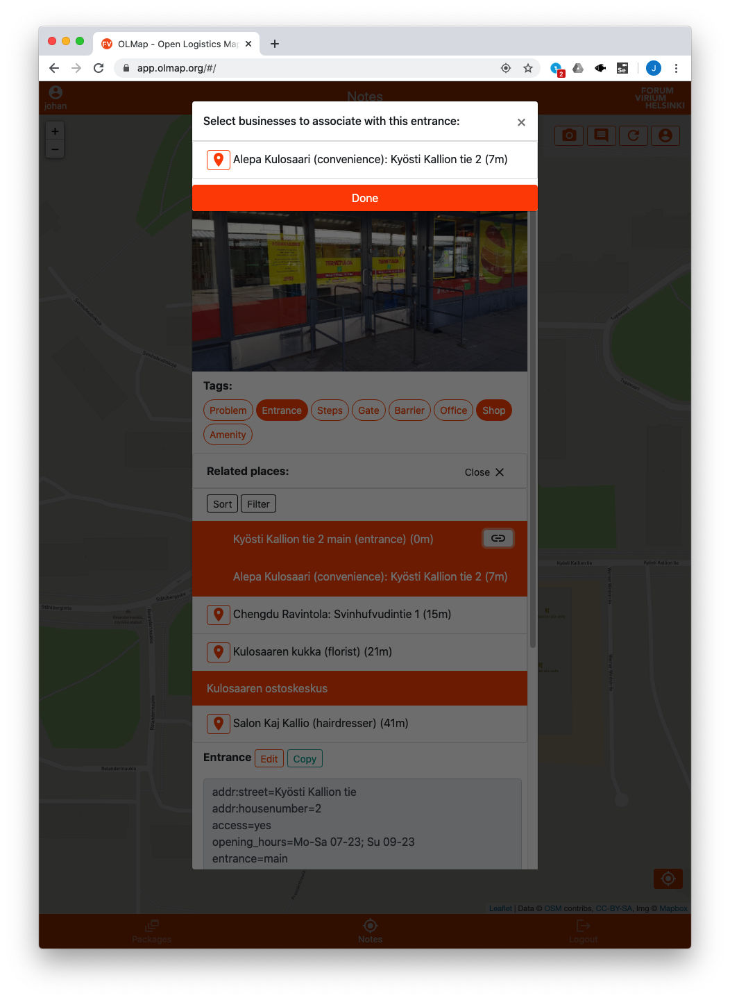Marking notes as reviewed
Once all needed changes to OSM suggested by the note have been made, and the new features have been linked back, the note can be marked as reviewed; reviewed notes will show up as green on the map to reviewers, allowing easy distinction between processed and unprocessed notes. Marking the note as reviewed happens by clicking the Accept button on the top of the note window; upon accepting, the note changes color on the map:
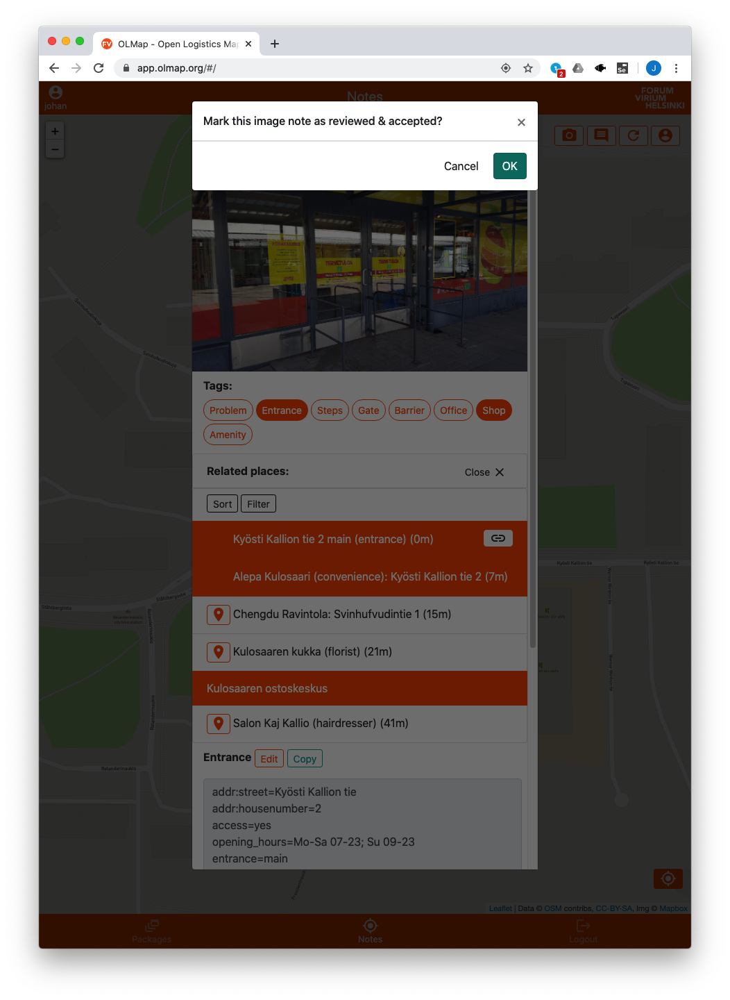